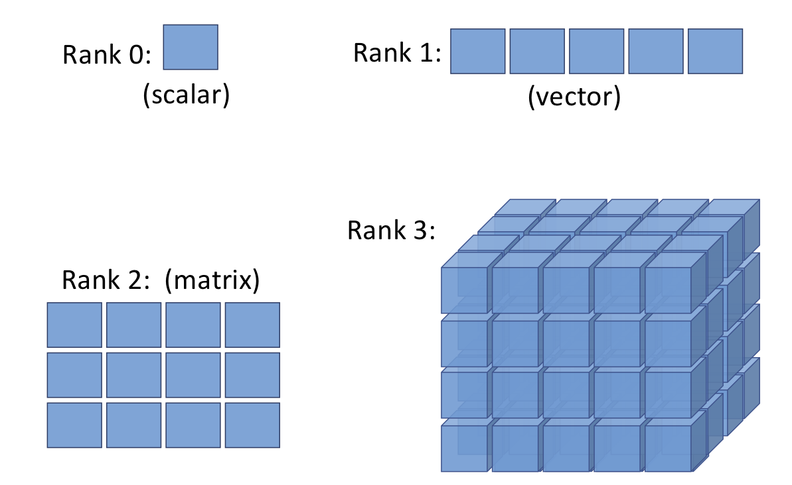
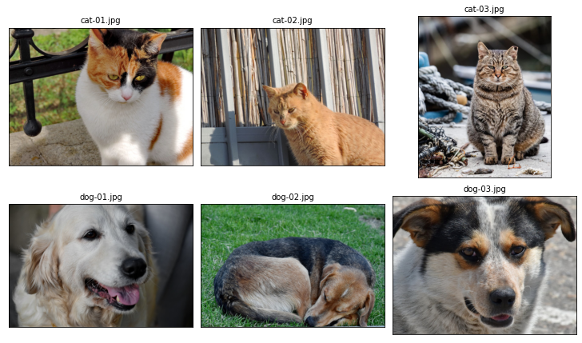
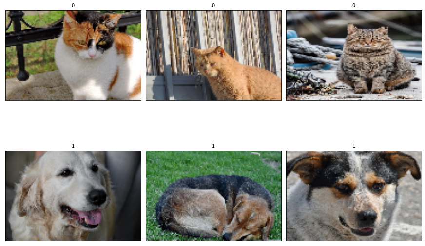
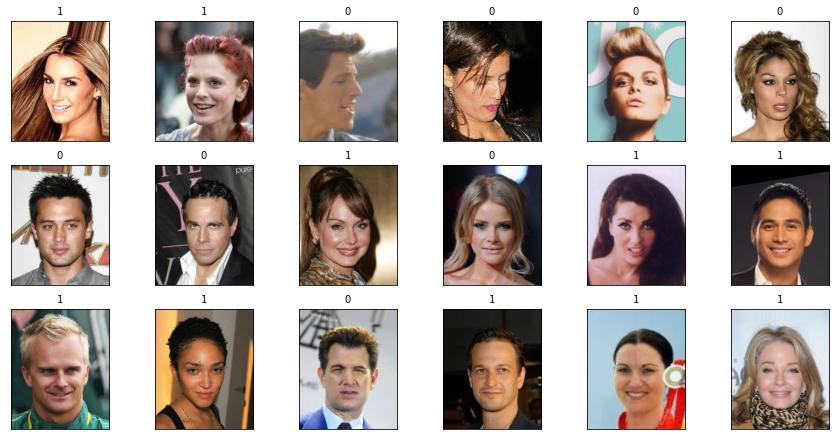
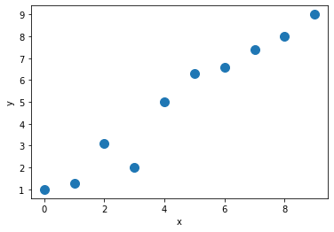
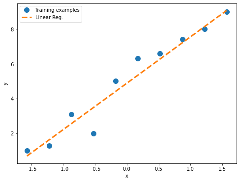
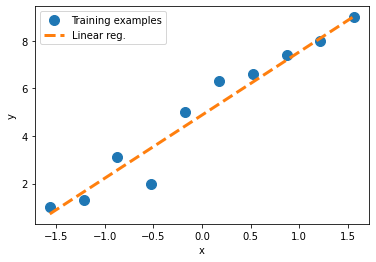
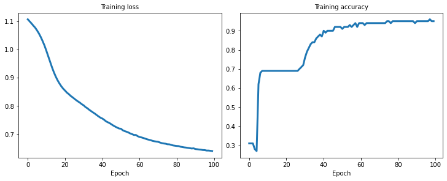

PyTorch 初探
Contents
PyTorch 初探#
from IPython.display import Image as IPythonImage
版本#
import torch
import matplotlib.pyplot as plt
import numpy as np
print(f'PyTorch version: {torch.__version__}')
np.set_printoptions(precision=3)
PyTorch version: 1.11.0
张量#
IPythonImage(filename='figures/1-01.png', width=500)

创建#
t_a = torch.tensor([1, 2, 3])
t_b = torch.from_numpy(np.array([4, 5, 6], dtype=np.int32))
print(t_a)
print(t_b)
tensor([1, 2, 3])
tensor([4, 5, 6], dtype=torch.int32)
torch.is_tensor(t_a)
True
t_ones = torch.ones(2, 3)
t_ones.shape
torch.Size([2, 3])
print(t_ones)
tensor([[1., 1., 1.],
[1., 1., 1.]])
rand_tensor = torch.rand(2, 3)
print(rand_tensor)
tensor([[0.4155, 0.2955, 0.8558],
[0.2517, 0.7356, 0.2528]])
类型 & 形状#
t_a_new = t_a.to(torch.int64)
print(t_a_new.dtype)
torch.int64
t = torch.rand(3, 5)
t_tr = torch.transpose(t, 0, 1)
print(t.shape, ' --> ', t_tr.shape)
torch.Size([3, 5]) --> torch.Size([5, 3])
t = torch.zeros(30)
t_reshape = t.reshape(5, 6)
print(t_reshape.shape)
torch.Size([5, 6])
t = torch.zeros(1, 2, 1, 4, 1)
t_sqz = torch.squeeze(t, 2)
print(t.shape, ' --> ', t_sqz.shape)
torch.Size([1, 2, 1, 4, 1]) --> torch.Size([1, 2, 4, 1])
t
tensor([[[[[0.],
[0.],
[0.],
[0.]]],
[[[0.],
[0.],
[0.],
[0.]]]]])
运算#
torch.manual_seed(1)
t1 = 2 * torch.rand(5, 2) - 1
t2 = torch.normal(mean=0, std=1, size=(5, 2))
t1
tensor([[ 0.5153, -0.4414],
[-0.1939, 0.4694],
[-0.9414, 0.5997],
[-0.2057, 0.5087],
[ 0.1390, -0.1224]])
t3 = torch.multiply(t1, t2)
print(t3)
tensor([[ 0.4426, -0.3114],
[ 0.0660, -0.5970],
[ 1.1249, 0.0150],
[ 0.1569, 0.7107],
[-0.0451, -0.0352]])
t4 = torch.mean(t1, axis=0)
print(t4)
tensor([-0.1373, 0.2028])
t5 = torch.matmul(t1, torch.transpose(t2, 0, 1))
print(t5)
tensor([[ 0.1312, 0.3860, -0.6267, -1.0096, -0.2943],
[ 0.1647, -0.5310, 0.2434, 0.8035, 0.1980],
[-0.3855, -0.4422, 1.1399, 1.5558, 0.4781],
[ 0.1822, -0.5771, 0.2585, 0.8676, 0.2132],
[ 0.0330, 0.1084, -0.1692, -0.2771, -0.0804]])
t6 = torch.matmul(torch.transpose(t1, 0, 1), t2)
print(t6)
tensor([[ 1.7453, 0.3392],
[-1.6038, -0.2180]])
norm_t1 = torch.linalg.norm(t1, ord=2, dim=1)
print(norm_t1)
tensor([0.6785, 0.5078, 1.1162, 0.5488, 0.1853])
np.sqrt(np.sum(np.square(t1.numpy()), axis=1))
array([0.678, 0.508, 1.116, 0.549, 0.185], dtype=float32)
分割、堆叠、合并#
torch.manual_seed(1)
t = torch.rand(6)
print(t)
t_splits = torch.chunk(t, 3)
[item.numpy() for item in t_splits]
tensor([0.7576, 0.2793, 0.4031, 0.7347, 0.0293, 0.7999])
[array([0.758, 0.279], dtype=float32),
array([0.403, 0.735], dtype=float32),
array([0.029, 0.8 ], dtype=float32)]
torch.manual_seed(1)
t = torch.rand(5)
print(t)
t_splits = torch.split(t, split_size_or_sections=[3, 2])
[item.numpy() for item in t_splits]
tensor([0.7576, 0.2793, 0.4031, 0.7347, 0.0293])
[array([0.758, 0.279, 0.403], dtype=float32),
array([0.735, 0.029], dtype=float32)]
A = torch.ones(3)
B = torch.zeros(2)
C = torch.cat([A, B], axis=0)
print(C)
tensor([1., 1., 1., 0., 0.])
A = torch.ones(3)
B = torch.zeros(3)
S = torch.stack([A, B], axis=1)
print(S)
tensor([[1., 0.],
[1., 0.],
[1., 0.]])
管线#
DataLoader#
from torch.utils.data import DataLoader
t = torch.arange(6, dtype=torch.float32)
data_loader = DataLoader(t)
data_loader = DataLoader(t, batch_size=3, drop_last=False)
for i, batch in enumerate(data_loader, 1):
print(f'batch {i}:', batch)
batch 1: tensor([0., 1., 2.])
batch 2: tensor([3., 4., 5.])
TensorDataset#
from torch.utils.data import TensorDataset
torch.manual_seed(1)
t_x = torch.rand([4, 3], dtype=torch.float32)
t_y = torch.arange(4)
joint_dataset = TensorDataset(t_x, t_y)
for example in joint_dataset:
print(f'x: {example[0]}, y: {example[1]}')
x: tensor([0.7576, 0.2793, 0.4031]), y: 0
x: tensor([0.7347, 0.0293, 0.7999]), y: 1
x: tensor([0.3971, 0.7544, 0.5695]), y: 2
x: tensor([0.4388, 0.6387, 0.5247]), y: 3
torch.manual_seed(1)
data_loader = DataLoader(dataset=joint_dataset, batch_size=2, shuffle=True)
for i, batch in enumerate(data_loader, 1):
print(f'batch {i}:, x: {batch[0]}\n y: {batch[1]}')
for epoch in range(2):
print(f'epoch {epoch+1}')
for i, batch in enumerate(data_loader, 1):
print(f'batch {i}:, x: {batch[0]}\n y: {batch[1]}')
batch 1:, x: tensor([[0.3971, 0.7544, 0.5695],
[0.7576, 0.2793, 0.4031]])
y: tensor([2, 0])
batch 2:, x: tensor([[0.7347, 0.0293, 0.7999],
[0.4388, 0.6387, 0.5247]])
y: tensor([1, 3])
epoch 1
batch 1:, x: tensor([[0.7576, 0.2793, 0.4031],
[0.3971, 0.7544, 0.5695]])
y: tensor([0, 2])
batch 2:, x: tensor([[0.7347, 0.0293, 0.7999],
[0.4388, 0.6387, 0.5247]])
y: tensor([1, 3])
epoch 2
batch 1:, x: tensor([[0.4388, 0.6387, 0.5247],
[0.3971, 0.7544, 0.5695]])
y: tensor([3, 2])
batch 2:, x: tensor([[0.7576, 0.2793, 0.4031],
[0.7347, 0.0293, 0.7999]])
y: tensor([0, 1])
创建数据集#
import pathlib
imgdir_path = pathlib.Path('cat_dog_images')
file_list = sorted([str(path) for path in imgdir_path.glob('*.jpg')])
print(file_list)
['cat_dog_images/cat-01.jpg', 'cat_dog_images/cat-02.jpg', 'cat_dog_images/cat-03.jpg', 'cat_dog_images/dog-01.jpg', 'cat_dog_images/dog-02.jpg', 'cat_dog_images/dog-03.jpg']
from PIL import Image
_, axes = plt.subplots(2, 3, figsize=(10, 6), constrained_layout=True)
for file, ax in zip(file_list, axes.flatten()):
img = Image.open(file)
print(f'Image shape: {np.array(img).shape}')
ax.set(xticks=[], yticks=[])
ax.imshow(img)
ax.set_title(pathlib.PurePath(file).name, size='medium')
# plt.savefig('figures/1-02.png')
plt.show()
Image shape: (900, 1200, 3)
Image shape: (900, 1200, 3)
Image shape: (900, 742, 3)
Image shape: (800, 1200, 3)
Image shape: (800, 1200, 3)
Image shape: (900, 1200, 3)

labels = [1 if 'dog' in pathlib.PurePath(file).name else 0 for file in file_list]
print(labels)
[0, 0, 0, 1, 1, 1]
from torch.utils.data import Dataset
class ImageDataset(Dataset):
def __init__(self, file_list, labels):
self.file_list = file_list
self.labels = labels
def __getitem__(self, index):
file = self.file_list[index]
label = self.labels[index]
return file, label
def __len__(self):
return len(self.labels)
image_dataset = ImageDataset(file_list, labels)
for file, label in image_dataset:
print(file, label)
cat_dog_images/cat-01.jpg 0
cat_dog_images/cat-02.jpg 0
cat_dog_images/cat-03.jpg 0
cat_dog_images/dog-01.jpg 1
cat_dog_images/dog-02.jpg 1
cat_dog_images/dog-03.jpg 1
import torchvision.transforms as transforms
class ImageDataset(Dataset):
def __init__(self, file_list, labels, transform=None):
self.file_list = file_list
self.labels = labels
self.transform = transform
def __getitem__(self, index):
img = Image.open(self.file_list[index])
if self.transform is not None:
img = self.transform(img)
label = self.labels[index]
return img, label
def __len__(self):
return len(self.labels)
img_height, img_width = 80, 120
transform = transforms.Compose([
transforms.ToTensor(),
transforms.Resize((img_height, img_width)),
])
image_dataset = ImageDataset(file_list, labels, transform)
_, axes = plt.subplots(2, 3, figsize=(12, 8), constrained_layout=True)
for example, ax in zip(image_dataset, axes.flatten()):
ax.set(xticks=[], yticks=[])
ax.imshow(example[0].numpy().transpose((1, 2, 0)))
ax.set_title(f'{example[1]}', size='medium')
# plt.savefig('figures/1-03.png')
plt.show()

加载数据集#
from torchvision import datasets
image_path = '../../datasets/torch'
celeba_dataset = datasets.CelebA(image_path,
split='train',
target_type='attr',
download=True)
assert isinstance(celeba_dataset, torch.utils.data.Dataset)
Files already downloaded and verified
from itertools import islice
_, axes = plt.subplots(3, 6, figsize=(12, 6), constrained_layout=True)
for (image, attributes), ax in islice(zip(celeba_dataset, axes.flatten()), 18):
ax.set(xticks=[], yticks=[])
ax.imshow(image)
ax.set_title(f'{attributes[31]}', size='medium')
# plt.savefig('figures/1-04.png')
plt.show()

mnist_dataset = datasets.MNIST(image_path, 'train', download=True)
assert isinstance(mnist_dataset, torch.utils.data.Dataset)
_, axes = plt.subplots(2, 5, figsize=(10, 6), constrained_layout=True)
for (image, label), ax in islice(zip(mnist_dataset, axes.flatten()), 10):
ax.set(xticks=[], yticks=[])
ax.imshow(image, cmap='gray_r')
ax.set_title(f'{label}', size='medium')
# plt.savefig('figures/1-05.png')
plt.show()

搭建网络#
线性模型#
X_train = np.arange(10, dtype='float32').reshape((10, 1))
y_train = np.array([1.0, 1.3, 3.1, 2.0, 5.0, 6.3, 6.6, 7.4, 8.0, 9.0],
dtype='float32')
_, ax = plt.subplots(figsize=(6, 4))
ax.plot(X_train, y_train, 'o', markersize=10)
ax.set(xlabel='x', ylabel='y')
# plt.savefig('figures/1-06.png')
plt.show()

from torch.utils.data import TensorDataset, DataLoader
X_train_norm = (X_train - np.mean(X_train)) / np.std(X_train)
X_train_norm = torch.from_numpy(X_train_norm)
y_train = torch.from_numpy(y_train)
train_ds = TensorDataset(X_train_norm, y_train)
batch_size = 1
train_dl = DataLoader(train_ds, batch_size, shuffle=True)
torch.manual_seed(1)
weight = torch.randn(1)
weight.requires_grad_()
bias = torch.zeros(1, requires_grad=True)
def loss_fn(input_, target):
return (input_ - target).pow(2).mean()
def model(xb):
return xb @ weight + bias
learning_rate = 0.001
num_epochs = 200
log_epochs = 10
for epoch in range(num_epochs):
for x_batch, y_batch in train_dl:
pred = model(x_batch)
loss = loss_fn(pred, y_batch)
loss.backward()
with torch.no_grad():
weight -= weight.grad * learning_rate
bias -= bias.grad * learning_rate
weight.grad.zero_()
bias.grad.zero_()
if epoch % log_epochs == 0:
print(f'Epoch {epoch} Loss {loss.item():.4f}')
Epoch 0 Loss 45.0782
Epoch 10 Loss 26.4366
Epoch 20 Loss 1.5918
Epoch 30 Loss 14.1307
Epoch 40 Loss 11.6038
Epoch 50 Loss 6.3084
Epoch 60 Loss 0.6349
Epoch 70 Loss 3.1374
Epoch 80 Loss 1.9999
Epoch 90 Loss 0.3133
Epoch 100 Loss 0.7653
Epoch 110 Loss 1.0039
Epoch 120 Loss 0.0235
Epoch 130 Loss 0.5176
Epoch 140 Loss 0.0759
Epoch 150 Loss 1.8789
Epoch 160 Loss 0.0008
Epoch 170 Loss 0.0866
Epoch 180 Loss 0.0646
Epoch 190 Loss 0.0011
print(f'Final Parameters: {weight.item()}, {bias.item()}')
X_test = np.linspace(0, 9, num=100, dtype='float32').reshape(-1, 1)
X_test_norm = (X_test - np.mean(X_train)) / np.std(X_train)
X_test_norm = torch.from_numpy(X_test_norm)
y_pred = model(X_test_norm).detach().numpy()
_, ax = plt.subplots(figsize=(8, 6))
ax.plot(X_train_norm, y_train, 'o', markersize=10)
ax.plot(X_test_norm, y_pred, '--', lw=3)
ax.legend(['Training examples', 'Linear Reg.'], fontsize='medium')
ax.set_xlabel('x', size='medium')
ax.set_ylabel('y', size='medium')
ax.tick_params(axis='both', which='major', labelsize='medium')
# plt.savefig('figures/1-07.png')
plt.show()
Final Parameters: 2.6696107387542725, 4.879678249359131

训练#
import torch.nn as nn
input_size = 1
output_size = 1
model = nn.Linear(input_size, output_size)
loss_fn = nn.MSELoss(reduction='mean')
optimizer = torch.optim.SGD(model.parameters(), lr=learning_rate)
for epoch in range(num_epochs):
for x_batch, y_batch in train_dl:
# 1. Generate predictions
pred = model(x_batch)[:, 0]
# 2. Calculate loss
loss = loss_fn(pred, y_batch)
# 3. Compute gradients
loss.backward()
# 4. Update parameters using gradients
optimizer.step()
# 5. Reset the gradients to zero
optimizer.zero_grad()
if epoch % log_epochs == 0:
print(f'Epoch {epoch} Loss {loss.item():.4f}')
Epoch 0 Loss 24.6684
Epoch 10 Loss 29.1377
Epoch 20 Loss 20.9207
Epoch 30 Loss 0.1257
Epoch 40 Loss 12.4922
Epoch 50 Loss 1.7845
Epoch 60 Loss 7.6425
Epoch 70 Loss 2.5606
Epoch 80 Loss 0.0157
Epoch 90 Loss 0.7548
Epoch 100 Loss 0.8412
Epoch 110 Loss 0.4923
Epoch 120 Loss 0.0823
Epoch 130 Loss 0.0794
Epoch 140 Loss 0.0891
Epoch 150 Loss 0.0973
Epoch 160 Loss 0.1043
Epoch 170 Loss 0.1103
Epoch 180 Loss 0.0009
Epoch 190 Loss 0.0764
print(f'Final weight: {model.weight.item()}, bias: {model.bias.item()}')
X_test = np.linspace(0, 9, num=100, dtype='float32').reshape(-1, 1)
X_test_norm = (X_test - np.mean(X_train)) / np.std(X_train)
X_test_norm = torch.from_numpy(X_test_norm)
y_pred = model(X_test_norm).detach().numpy()
_, ax = plt.subplots(figsize=(6, 4))
ax.plot(X_train_norm, y_train, 'o', markersize=10)
ax.plot(X_test_norm, y_pred, '--', lw=3)
ax.legend(['Training examples', 'Linear reg.'], fontsize='medium')
ax.set_xlabel('x', size='medium')
ax.set_ylabel('y', size='medium')
ax.tick_params(axis='both', which='major', labelsize='medium')
# plt.savefig('figures/1-08.png')
plt.show()
Final weight: 2.6496422290802, bias: 4.87706995010376

搭建多层感知机#
from sklearn.datasets import load_iris
from sklearn.model_selection import train_test_split
iris = load_iris()
X, y = iris['data'], iris['target']
X_train, X_test, y_train, y_test = train_test_split(X,
y,
test_size=1. / 3,
random_state=1)
X_train_norm = (X_train - np.mean(X_train)) / np.std(X_train)
X_train_norm = torch.from_numpy(X_train_norm).float()
y_train = torch.from_numpy(y_train)
train_ds = TensorDataset(X_train_norm, y_train)
torch.manual_seed(1)
batch_size = 2
train_dl = DataLoader(train_ds, batch_size, shuffle=True)
from torch import nn, optim
class Model(nn.Module):
def __init__(self, input_size, hidden_size, output_size):
super(Model, self).__init__()
self.layer1 = nn.Linear(input_size, hidden_size)
self.layer2 = nn.Linear(hidden_size, output_size)
def forward(self, x):
x = self.layer1(x)
x = nn.Sigmoid()(x)
x = self.layer2(x)
x = nn.Softmax(dim=1)(x)
return x
input_size = X_train_norm.shape[1]
hidden_size = 16
output_size = 3
model = Model(input_size, hidden_size, output_size)
# loss
loss_fn = nn.CrossEntropyLoss()
# optimizer
optimizer = optim.Adam(model.parameters(), lr= 0.001)
num_epochs = 100
loss_hist = [0] * num_epochs
accuracy_hist = [0] * num_epochs
for epoch in range(num_epochs):
for x_batch, y_batch in train_dl:
# forward
pred = model.forward(x_batch)
# loss
loss = loss_fn(pred, y_batch)
loss.backward()
optimizer.step()
optimizer.zero_grad()
loss_hist[epoch] += loss.item() * y_batch.size(0)
is_correct = (torch.argmax(pred, dim=1) == y_batch).float()
accuracy_hist[epoch] += is_correct.sum()
loss_hist[epoch] /= len(train_dl.dataset)
accuracy_hist[epoch] /= len(train_dl.dataset)
_, axes = plt.subplots(1, 2, figsize=(10, 4), constrained_layout=True)
axes[0].plot(loss_hist, lw=3)
axes[0].set_title('Training loss', size='medium')
axes[0].set_xlabel('Epoch', size='medium')
axes[0].tick_params(axis='both', which='major', labelsize='medium')
axes[1].plot(accuracy_hist, lw=3)
axes[1].set_title('Training accuracy', size='medium')
axes[1].set_xlabel('Epoch', size='medium')
axes[1].tick_params(axis='both', which='major', labelsize='medium')
# plt.savefig('figures/1-09.png')
plt.show()

评估模型#
X_test_norm = (X_test - np.mean(X_train)) / np.std(X_train)
X_test_norm = torch.from_numpy(X_test_norm).float()
y_test = torch.from_numpy(y_test)
pred_test = model(X_test_norm)
correct = (torch.argmax(pred_test, dim=1) == y_test).float()
accuracy = correct.mean()
print(f'Test Acc.: {accuracy:.4f}')
Test Acc.: 0.9800
保存、加载模型#
path = '../../datasets/torch/iris_classifier.pt'
torch.save(model, path)
model_new = torch.load(path)
model_new.eval()
Model(
(layer1): Linear(in_features=4, out_features=16, bias=True)
(layer2): Linear(in_features=16, out_features=3, bias=True)
)
pred_test = model_new(X_test_norm)
correct = (torch.argmax(pred_test, dim=1) == y_test).float()
accuracy = correct.mean()
print(f'Test Acc.: {accuracy:.4f}')
Test Acc.: 0.9800
path = '../../datasets/torch/iris_classifier_state.pt'
torch.save(model.state_dict(), path)
model_new = Model(input_size, hidden_size, output_size)
model_new.load_state_dict(torch.load(path))
<All keys matched successfully>
选择激活函数#
Logistic 方程#
X = np.array([1, 1.4, 2.5]) ## first value must be 1
w = np.array([0.4, 0.3, 0.5])
def logistic(z):
return 1.0 / (1.0 + np.exp(-z))
def logistic_activation(X, w):
z = np.dot(X, w)
return logistic(z)
print(f'P(y=1|x) = {logistic_activation(X, w):.3f}')
P(y=1|x) = 0.888
# W : array with shape = (n_output_units, n_hidden_units+1)
# note that the first column are the bias units
W = np.array([[1.1, 1.2, 0.8, 0.4], [0.2, 0.4, 1.0, 0.2], [0.6, 1.5, 1.2,
0.7]])
# A : data array with shape = (n_hidden_units + 1, n_samples)
# note that the first column of this array must be 1
A = np.array([[1, 0.1, 0.4, 0.6]])
Z = np.dot(W, A[0])
y_probas = logistic(Z)
print(f'Net Input: {Z}\nOutput Units: {y_probas}')
Net Input: [1.78 0.76 1.65]
Output Units: [0.856 0.681 0.839]
y_class = np.argmax(Z, axis=0)
print(f'Predicted class label: {y_class}')
Predicted class label: 0
Softmax 方程#
def softmax(z):
return np.exp(z) / np.sum(np.exp(z))
y_probas = softmax(Z)
print(f'Probabilities: {y_probas}, Sum: {np.sum(y_probas)}')
Probabilities: [0.447 0.161 0.392], Sum: 1.0
torch.softmax(torch.from_numpy(Z), dim=0)
tensor([0.4467, 0.1611, 0.3922], dtype=torch.float64)
抛物正切#
def tanh(z):
e_p = np.exp(z)
e_m = np.exp(-z)
return (e_p - e_m) / (e_p + e_m)
z = np.arange(-5, 5, 0.005)
log_act = logistic(z)
tanh_act = tanh(z)
_, ax = plt.subplots(figsize=(6, 4))
ax.set(ylim=[-1.5, 1.5], xlabel='Net input $z$', ylabel='Activation $\phi(z)$')
ax.axhline(1, color='black', linestyle=':')
ax.axhline(0.5, color='black', linestyle=':')
ax.axhline(0, color='black', linestyle=':')
ax.axhline(-0.5, color='black', linestyle=':')
ax.axhline(-1, color='black', linestyle=':')
ax.plot(z, tanh_act, linewidth=3, linestyle='--', label='Tanh')
ax.plot(z, log_act, linewidth=3, label='Logistic')
ax.legend(loc='lower right')
# plt.savefig('figures/1-10.png')
plt.show()

from scipy.special import expit
expit(z)
array([0.007, 0.007, 0.007, ..., 0.993, 0.993, 0.993])
torch.sigmoid(torch.from_numpy(z))
tensor([0.0067, 0.0067, 0.0068, ..., 0.9932, 0.9932, 0.9933],
dtype=torch.float64)
ReLU#
torch.relu(torch.from_numpy(z))
tensor([0.0000, 0.0000, 0.0000, ..., 4.9850, 4.9900, 4.9950],
dtype=torch.float64)
IPythonImage(filename='figures/1-11.png', width=500)